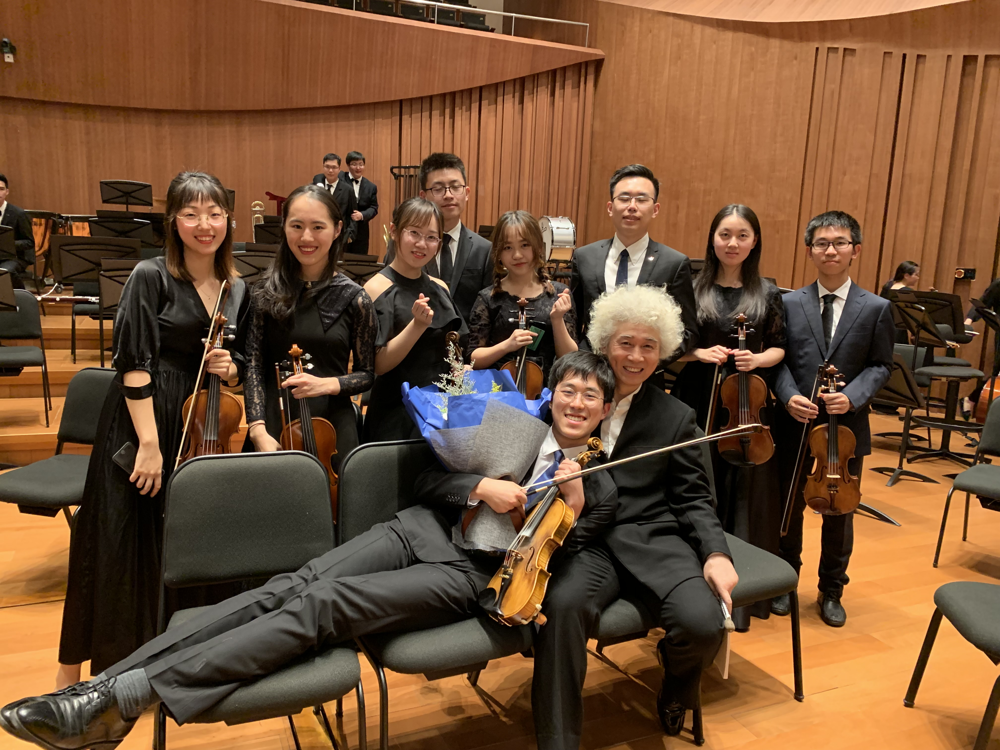

yang DOT 5656 AT osu DOT edu
|
Willkommen! I am a 2nd-year PhD Student advised by Prof. Zhiqiang Lin in SecLab, The Ohio State University. Prior to joining OSU, I obtained my Bachelor's Degree from Nanjing University. Then, I was a research assistant in SJTU and Shanghai Qizhi Research Institute. My research interest lies in security and privacy of social-oriented platforms and services, especially for giant social platforms such as Wechat and Meta. For NJU alumni: I co-founded of the NJU-CS-Flyers alumni network and am the Alumni Liason (校友联络员) of Software Institute (class of 2020). Should you need any help connecting with your alumni, feel free to drop me an email. |
 |
| About Me | My Calendar | InfoSec Ranking | Music Scores | My Friends |
Lecture series invited by Feng Liu on cybersecurity and CTF contest.
Lectures invited by Jian Chen on CTF, Committee and organizer of 3rd NJU TrinityCTF contest in 2020.
Joined the TA team while taking the course, revised the lab guide
Lectures invited by Jian Chen on CTF, Committee and organizer of 2nd NJU TrinityCTF contest in 2019.
1. Music is a fundamental and indispensable part of my life. I served in OSU's Buckeye Philharmonic Orchestra (2021~), Nanjing University Symphony Orchestra (2016~2020), NJU Piano Association (2016~2020) separately.
2. I had been learning Kendo (Japanese Fencing) since 2021 and an active member in OSU Kendo Club, a club associated with East-Central U.S. Kendo Federation (ECUSKF).
3. I am the Alumni Liaison of SWI (class of 2020).
4. I co-founded NJU-CS-Flyers, an alumni network for CS/SE students abroad.
5. I co-founded Aegis-readers, a group with computer science researchers in cybersecurity. Part of the members can be seen here.